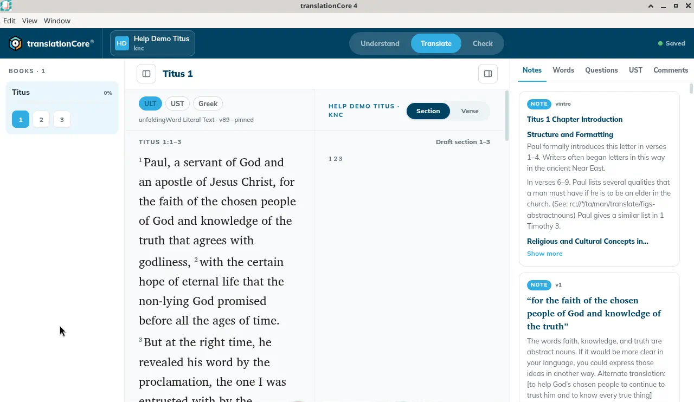
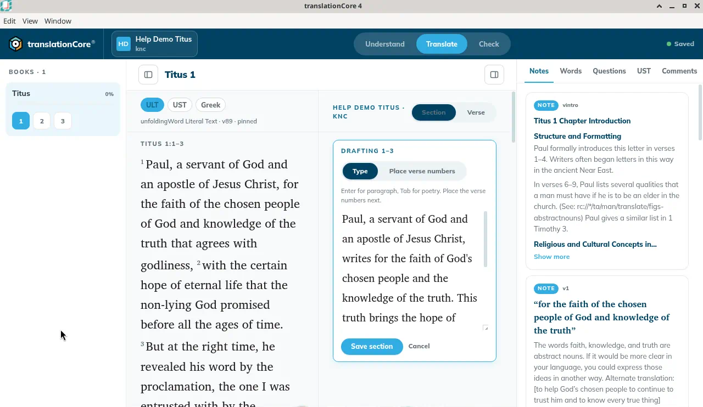

Draft a section
Type a whole section as one piece of text, then place the verse numbers. This is the main way to draft in tC4.
Where in the app: Translate › Section › Draft section {span} on a section row
What it is
Section drafting lets you translate the way you think — a paragraph or a thought at a time — instead of verse by verse. You type the section's text straight through in Type mode, then switch to Place verse numbers to put each verse number where that verse begins.
When to use it
For first drafts. Most translators draft whole sections.
Step by step
- In Translate, make sure the switch at the top right says Section.
- On the row you want, click Draft section {span} (for example "Draft section 1–3" for the first section of Titus 1).
- The editor opens in Type mode. Type your translation of the whole section.
- Click Place verse numbers and place each number (see Place verse numbers).
- Click Save section.
- To change a saved section later, click its Draft section {span} label on the row again. Clicking the saved text itself does not open the editor.
What you should see
- The editor card opens under the section, headed "Drafting 1–3" with a Type | Place verse numbers switch.
- After Save section the verses show in your translation column with their numbers, and the save indicator shows Saved.
Screenshots

Screenshot comingA section row with its Draft section button
img/tr-draft-section-1.png
Screenshot comingThe section editor in Type mode with text typed
img/tr-draft-section-2.pngTips
- You can also type the verse numbers yourself in Type mode: start a line with the number, for example
2 Then he said…. tC4 reads it as the start of verse 2. - The first verse number of a section is fixed at the start.
- When you reopen a saved section, Type mode shows each verse number as a plain number at the start of its line. If you press Enter between a number and its first word, the number looks as if it stands alone on a line. It is still saved at the start of that verse.
- Cancel closes the editor without saving the section.
- Press Enter for a new paragraph and Tab for a poetry line. See Paragraphs and poetry.
- While an editor is open, the Section / Verse switch is disabled.
- Known issue: If you start typing the moment the editor opens, the first letters can be lost. Wait a moment after it opens, and check the start of your text before you save.
Known limits
- A verse number you leave in the To place bank is saved as an empty verse (not drafted).
- Renumbering verses in the editor is planned for 4.1.0 (issue #364).
Related topics
For testers and developers
Code: src/views/SectionEditor.jsx, src/views/sectionDraft.js, src/views/Draft.jsx (TargetCell), src/state.jsx (startSection, saveSection)
Journeys: J2
Issues: #141